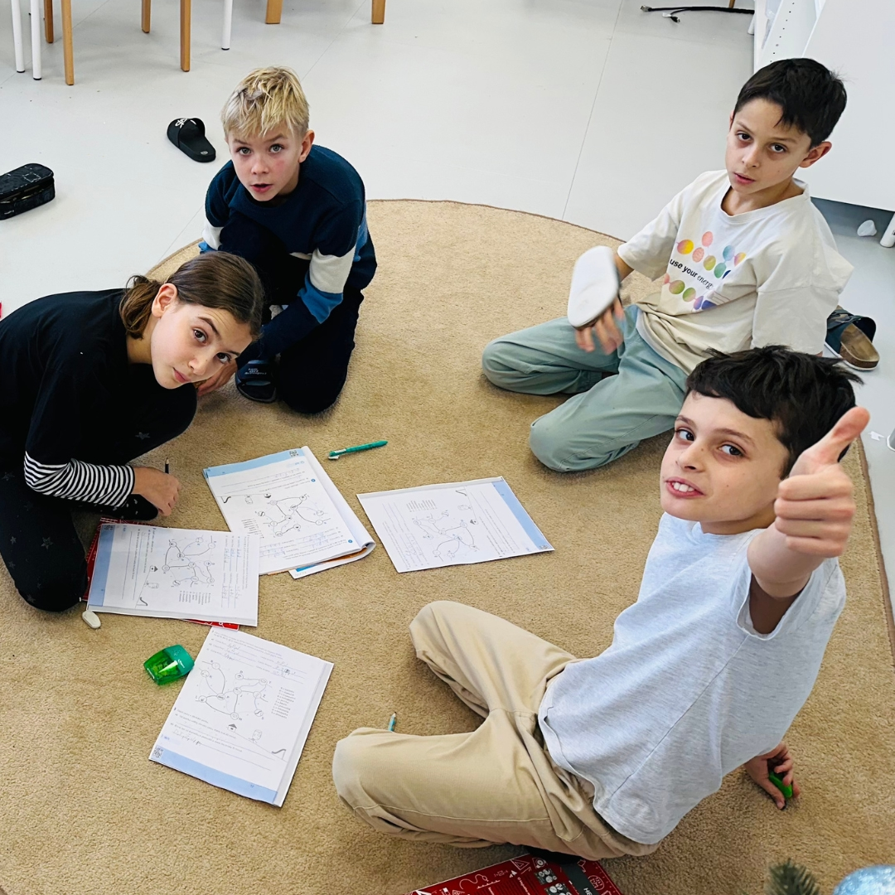
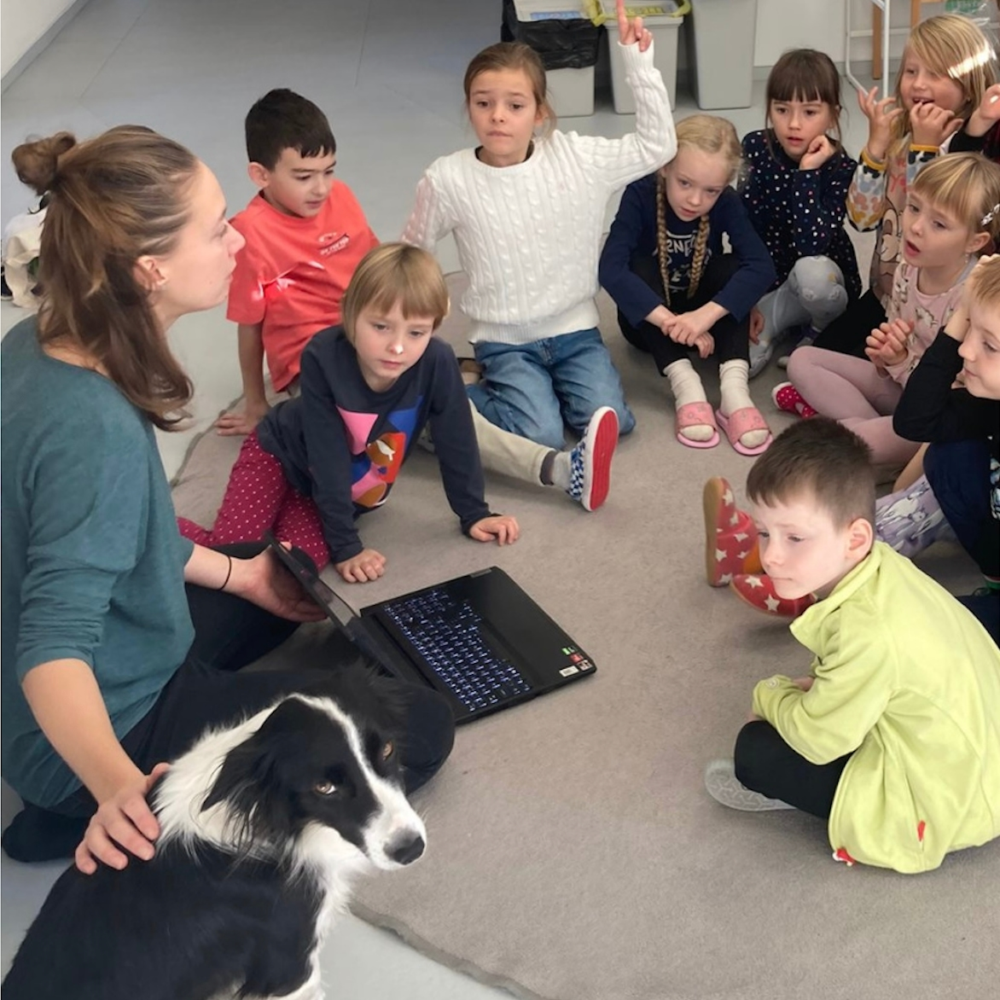
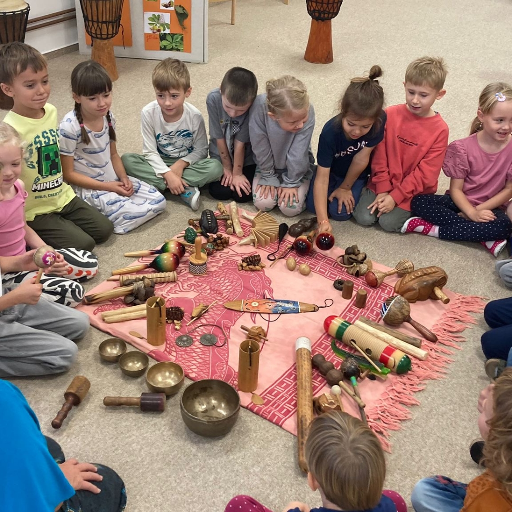

Hledáte pro své dítě místo, kde se učení potkává s radostí?
Pro rok 2026/27 přijímáme žáky na oba stupně naší ZŠ a nově otevíráme náruč i těm nejmenším v naší nové školce LittleFLOW.
Den otevřených dveří — středa 6. 5. o 17:00
Our model of teaching and learning
Real projects, solid foundations, clear structure
Ve FLOW School systematicky navrhujeme teaching tak, aby podporovala bezpečné klima, vnitřní motivaci a přiměřenou míru výzvy. Program 1. stupně propojuje projektově orientované učení s průběžným a měřitelným rozvojem čtenářské a matematické gramotnosti. Angličtina je do teaching integrována prostřednictvím co-teachingu a principů CLIL, digitální kompetence rozvíjíme účelně a v návaznosti na reálné úkoly. Důraz na stabilní rutiny a každodenní wellbeing podporuje soustředění, samostatnost i dlouhodobou udržitelnost výkonu.
What your child will experience ve FLOW

Project-oriented teaching
Vše ve Flow se točí kolem výzev z reálného života. students provádějí výzkum → vytvářejí prototypy → prezentují → reflektují, budují komunikační dovednosti, spolupráci a kritické myšlení. Pokrok svého child's poznáte brzy, díky zpětné vazbě a možnosti jej vidět svou práci prezentovat před plnou třídou spolustudents a jejich parents.
English at FLOW
Kromě klasické teaching angličtiny pod vedením native speakers, rovněž třídní teacher u nás učí společně s anglicky mluvícím pedagogem. Angličtinu zapojujeme krátkými, smysluplnými aktivitami inspirovanými metodou CLIL, aby ji děti slyšely a používaly při reálné práci — přitom hlavní výuka probíhá v češtině. Máme přehledný plán, co se děti postupně naučí v poslechu, mluvení a odborné slovní zásobě.


Confidence in reading, writing and mathematics
Every day we have reading and writing lessons and step-by-step math. Children build confidence and fluencynulost, které hned využívají v projektech — učení tak má jasný smysl a konkrétní výstup.
Digital literacy and programming
From grade 1, children search for information, create digital outputs, try programming and learn to presentzentovat. ICT specialisté plánují teaching společně s teachers, aby technologie podporovala přemýšlení, práci s daty a komunikaci — ne aby je nahrazovala.


A safe environment for the courage to learn
Every day we start with morning circle, we have calm spaces in classrooms and children have support whenž ji potřebují. Když se child cítí bezpečně a patří do skupiny, snáz se soustředí a nebojí se výzev. Our rutiny dělají bezpečí a respekt viditelnými.
FLOW Students
Curious • Creative • Collaborative • Thoughtful • Competent
At Flow we guide children to become confident communicators and problem-solvers – such as, kteří umí to, co se naučí, přenést i do nových situací v reálném životě. U nás nezáleží jen na tom, co se děti učí, ale hlavně jak se to učí.

Menu
Contact
Contact information
Corner of Přívozní 1064/2a and Jankovcovy 53
Prague 7 - Holešovice
IČ: 08916403
Red IZO: 691016054 / IZO: 181129167
Data box: uf3q7m6
Get in Touch
General enquiries
info@skolaflow.czContact for GDPR representative:
gdpr@skolaflow.czInfo line (Mon–Wed, Fri: 9am–12pm)
+420 770 673 828